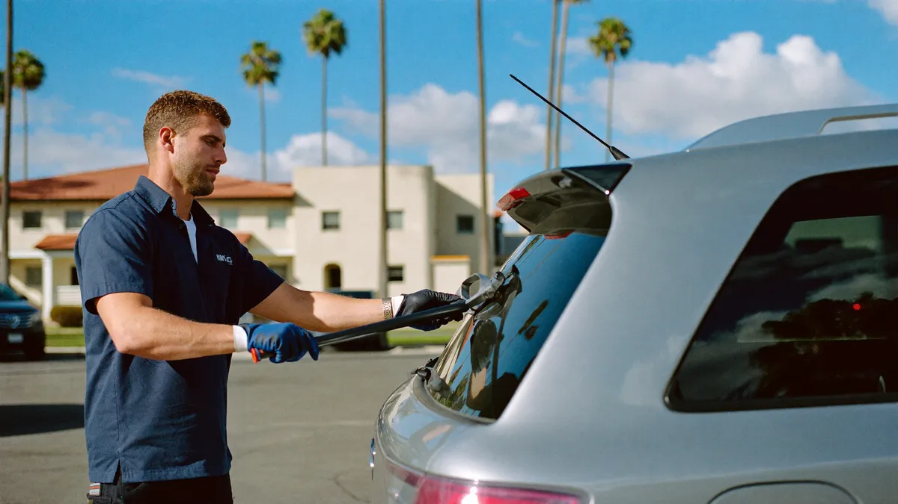

Your driveway, condo lot or office is the shop. We bring the glass, tools and adhesive with us.
Call Now for a Free Quote: (321) 449-7258
Mobile auto glass service in Cape Canaveral brings a fully stocked van to wherever your car is parked. It is for busy drivers, condo owners along the beach, and anyone who would rather not spend a morning at a glass shop. You get the same chip repair, windshield replacement or side window work, without moving your car.
We confirm the glass for your exact vehicle before the visit, so the right part is on the van. On the day, the technician needs a level spot about the size of a parking space plus room to open the doors.
Chip repairs need about 30 minutes. A windshield replacement takes about an hour, plus adhesive cure time. You can stay at your desk or in the house while we work.
Urethane adhesive needs dry glass and a dry frame to bond. Rain on the pinch weld can weaken the seal, which is why we do not set glass in open rain.
Summer storms here usually build in the afternoon and pass quickly. We book morning slots in storm season, carry cover, and use garages, carports, or covered parking decks when the sky looks bad.
The glass and the work set the price, not the trip. Your vehicle, the type of glass, and whether a camera needs calibration matter most.
Call for a free quote and we will give you a number for your vehicle and a time window that works for you.
Call for a Free Quote: (321) 449-7258| Mobile Service | Shop Visit | |
|---|---|---|
| Where | Your driveway, condo lot or workplace | A covered bay at a shop |
| Your time | Keep working or stay home | Drive there and wait or arrange a ride |
| Best for | Chip repair, most windshields, side and back glass | Some static camera calibrations that need a controlled bay |
| Weather | Planned around storms, covered spots preferred | Not a factor |
Not sure which applies to your car? Call and describe it, and we will tell you. We also handle windshield chip & crack repair and windshield replacement.
Not always. We need the car unlocked or the keys at the start and end of the job, but you do not have to stand next to it while we work.
Usually, yes. A covered garage is actually ideal in storm season. Some buildings ask for a heads-up first, so check with your association.
Yes, when the glass is set in dry conditions with the right urethane and the proper drive-away time. The weather is the main difference, which is why we plan around it.
We cover the work area or pause. If the frame gets wet before the glass is set, we dry it and prep it again rather than bond over moisture.
Call now for a free quote and a time at your home or work. We confirm the glass for your vehicle before we arrive.
Call Now for a Free Quote: (321) 449-7258